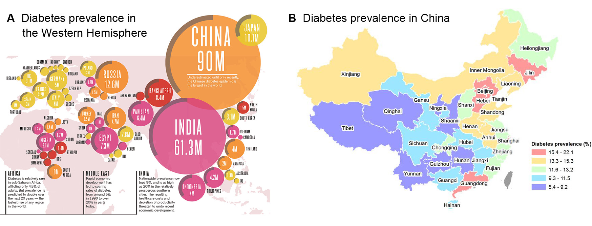

Know more about this project
Introduction
Diabetes mellitus (DM) has been developed to the most urgent global challenge, which is a life-long disease that prevents your body from properly using the energy from the food you eat. The type II diabete affects the ability of production of insulin secretion by pancreas. People with diabetes are confering a higher risk for developing infections which is mycobacterium tuberculosis (TB) infection. TB is also called contagious infection because of it attacks the lungs. It spreads through cold or the flu, like some TB patients whose coughs, sneezes or taking with other healthy people, it has higher probability to get infected. In China, it developed to the major public health problem becasue there were 1.56 million new TB cases and 51.52 thousand people death in 2015[10].

The planned questions include what’s the incident rate of TB and its associates among adults with type 2 diabetes in Shanghai, China between 2004-2014, and geographical distribution of TB infection among these specific populations. We intend to explore which variables might affect the TB incidence in people with type 2 diabetes. The potential factors would conclude gender, sociodemographic factor (i.e. age at diagnosis of T2D), clinical parameters (BMI, fasting glucose), complications of T2D, choice of antidiabetic medication, mode of exercises and geographical location. Most of these questions were answered in our project. Over the course of the project, we found it’s necessary to further analyze their interaction, like analyzing exercises distribution and glucose management odds ratios in different districts. Also, we come up with a new question that we might further explore the multilevel analysis on TB cases if more data is accessible. For example, we can analyze the individual, street and district levels respectively to check whether there is any difference in influencing the number of TB cases.
Therefore, we would like to explore the incidence rate of TB among people with Type II diabetes and what potential risk factors contribute to this comorbidity, and hopefully, provide recommendations to control or decrease the prevalence of TB among people with Type II diabetes in China.
Data Sources
The diabetes data was from the Shanghai community-based diabetes management system (SCDMS), which was a diabetes register system operated by the Shanghai Municipal Centers for Disease Control and Prevention (Shanghai-CDC).
Tuberculosis data was from Shanghai Municipal TB Surveillance System (SMTSS).
We obtained the administrative map from the ArcGIS website, with the link: https://www.arcgis.com/home/item.html?id=105f92bd1fe54d428bea35eade65691b,
Statistical analyses
We explore some variables including drugs, the age of diagnosis of diabetes, BMI and glucose, stratified by gender and geographical areas. Make some discription of distribution of these variables among tuberculosis cases and non-tuberculosis cases.
After the first step of analysis of the data set, we decided to mainly focus on four main risk factors: glucose level, drug usage level, complications level, and daily exercise level. When doing the analysis, for each risk factors, we looked for the different distributions of different levels by gender, by district, and by age. Because we are investigating the incidence of tuberculosis among Type II diabetes patients, we also analyzed the odds of tuberculosis in different levels of risk factors. We have explored histograms, density plot and odds ratio comparing plot to analyze different distributions.
We also did additional analysis, like Cox regression, Survival analysis and Geo analysis.
The Cox regression was fitted with covariates of complications, daily exercise level, drug taking, and gender. Using the P-value to indicate whether the model is significant or not. The survial analysis could visualize how different risk factors affect the time of getting TB among people with Type II diabetes. The K-M survial curve are shown on the website. The Geo analytics could display the magitude for each parameter, which shows the living area for patients recorded to the datasets.
Main Results
With an average following-up period of 3.8 year (range: 0 to 10.96 years), 785 TB cases were recorded among 170 381 T2DM patients from 654 977 person-years follow-up. The incident rate of TB was 168.29 per 100 000 person-years for men, and 38.54 per 100 000 person-years for women.
For Kaplan-Meier survival curves, gender and drug taking have effects on the probability of getting TB while exercise and complication have no significant effect.
We have calculated the incidence of TB, estimate and confidence interval of the adjusted odds ratio for people with diabetes and TB who regularly monitor glucose to those comparing with people without when we keeped all other variables fixed for each district in Shanghai. The results of odds ratio in different level of drugs is shown on the website.
Referrence
Chen, L., Magliano, D. J., & Zimmet, P. Z. (2012). The worldwide epidemiology of type 2 diabetes mellitus–present and future perspectives. Nature Reviews Endocrinology, 8(4), 228-236. doi:10.1038/nrendo.2011.183
Kumar, N. P., Moideen, K., George, P. J., Dolla, C., Kumaran, P., & Babu, S. (2016). Impaired cytokine but enhanced cytotoxic marker expression in mycobacterium tuberculosis-induced CD8+ T cells in individuals with type 2 diabetes and latent mycobacterium tuberculosis infection. The Journal of Infectious Diseases, 213(5), 866-870. doi:10.1093/infdis/jiv484
Webb, E. A., Hesseling, A. C., Schaaf, H. S., Gie, R. P., Lombard, C. J., Spitaels, A., . . . Beyers, N. (2009). High prevalence of Mycobacterium tuberculosis infection and disease in children and adolescents with type 1 diabetes mellitus. The International Journal of Tuberculosis and Lung Disease, 13(7), 868-874. Retrieved from https://www.ingentaconnect.com/contentone/iuatld/ijtld/2009/00000013/00000007/art00013
Martinez, N., & Kornfeld, H. (2014). Diabetes and immunity to tuberculosis. European Journal of Immunology, 44(3), 617-626. doi:10.1002/eji.201344301
Sullivan, T., & Ben Amor, Y. (2012). The co-management of tuberculosis and diabetes: challenges and opportunities in the developing world. PLoS Medicine, 9(7), e1001269. doi:10.1371/journal.pmed.1001269
Stevenson, C. R., Forouhi, N. G., Roglic, G., Williams, B. G., Lauer, J. A., Dye, C., & Unwin, N. (2007). Diabetes and tuberculosis: the impact of the diabetes epidemic on tuberculosis incidence. BMC Public Health, 7, 234. doi:10.1186/1471-2458-7-234
Zhou, M., Astell-Burt, T., Bi, Y., Feng, X., Jiang, Y., Li, Y., . . . Ning, G. (2015). Geographical variation in diabetes prevalence and detection in china: multilevel spatial analysis of 98,058 adults. Diabetes Care, 38(1), 72-81. doi:10.2337/dc14-1100
International Diabetes Federation. (2015). IDF Diabetes Atlas (7th edn). Retrieved from http://www.diabetesatlas.org
Walker, C., & Unwin, N. (2010). Estimates of the impact of diabetes on the incidence of pulmonary tuberculosis in different ethnic groups in England. Thorax, 65(7), 578-581. doi:10.1136/thx.2009.128223
Qiu, H., Shi, Y., Li, Y., Shen, X., Li, R., Yang, Q., . . . Yan, F. (2017). Incident rate and risk factors for tuberculosis among patients with type 2 diabetes: retrospective cohort study in Shanghai, China. Tropical Medicine & International Health, 22(7), 830-838. doi:10.1111/tmi.12884
Zhu, S., Xia, L., Yu, S., Chen, S., & Zhang, J. (2018). Publisher Correction: The burden and challenges of tuberculosis in China: Findings from the Global Burden of Disease Study 2015. Scientific Reports, 8(1).[doi:10.1038/s41598-018-19650-1]